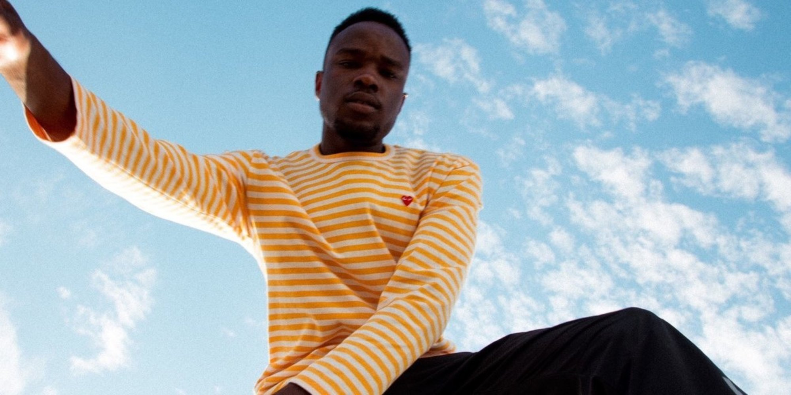

MEET ODIE
For those unfamiliar with Odie, he is a 21-year old r&b singer from San Deigo. He is undoubtley one of my favorite artist in the game right now. This speaks volumes to someone who's listened to 136,000 minutes of music in 2018 - according to spotify. Everything about Odie is refreshing and exciting. His song writing, production and creativity are consistently immersive - giving you a roller coaster of emotions with each song. So, I highly reccomend you experience this for yourself, and give this king a listen.